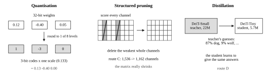
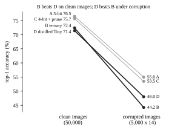
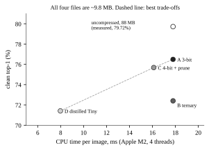

| Problem | P49: Compressing a Vision Transformer to 10 MB [Challenging] |
| Model | DeiT-Small, a standard image classifier: 22 million numbers, 88.2 MB on disk, 79.7% accuracy |
| Target | Under 10 MB, which leaves about 3.6 bits for each number instead of 32 |
| Data | ImageNet (50,000 test photos, 1,000 categories), plus 14 kinds of artificial damage such as noise, blur and fog on 5,000 of them |
| Deliverable | UCS532 sessional report, CVPR format |
| Duration | 7 weeks (Week 3 to Week 9), checkpoint at Week 6 |
Phones and small devices cannot hold an 88 MB model. P49 asks for one under 10 MB, using three standard ideas:

Papers usually compare these methods on one number: accuracy on clean photos. While building the four models, I noticed two problems with that.
The size on paper is not the size on disk. Papers estimate size with a formula, number of weights × bits ÷ 8. A real file also stores small extra numbers (scales) and keeps a few layers at higher precision. For large models this adds only 2–5%, so the formula is fine there. For small models squeezed hard, it is not: my real 2-bit DeiT-Small file is 29% bigger than the formula says, and DeiT-Tiny 53% bigger.
One accuracy number hides a lot. Two models can score the same and still get different photos wrong, or behave differently when the photo is noisy or blurred.
Central question. If four compressed models have exactly the same file size and the same amount of training, do they fail on the same photos? And does the model that wins on clean photos still win on damaged ones?
O1. Measure real file sizes and compare them with the formula, across bit-widths and five model sizes.
O2. Build a fair race: four compressed models of the same real size, each given the same 3000 training steps.
O3. Compare how they fail: on clean photos and on each kind of damage, photo by photo.
O4. Rule out luck: train each model three times and only count differences bigger than the run-to-run noise.
O5. Build the P49 trade-off table: accuracy, size and CPU speed side by side, stage by stage.
| Goal | Why it is still open |
|---|---|
| O1 | Language-model papers count the extra bytes. The vision papers I read use the formula, and none measures where it stops being accurate. |
| O2 | The closest study (Kuzmin et al., NeurIPS 2023) compares two methods at a size worked out on paper, not measured. |
| O3–O4 | Earlier studies compare one compressed model with its original. Method against method, at equal size, with run-to-run noise measured, I could not find. |
I am not proposing a new compression method. Every method I use is published. What is new is a fair comparison:
| What | Number | How it was checked |
|---|---|---|
| DeiT-Small size | 88.24 MB, 22,050,664 numbers | File written and measured; also rebuilt from the layer shapes |
| DeiT-Small accuracy | 79.72% (published: 79.8%) | Re-measured in my own pipeline |
| Formula error, 2-bit | +29.1% (DeiT-Small), +53.5% (DeiT-Tiny) | 80 files across 5 models, each size also rebuilt by hand from shapes |
| A published size | Mix-QViT's 11.4 MB | Rebuilt from the formula to within 0.03 MB; a real file built their way is 2–5% larger |
Each model has one setting that I adjust until its file is about 9.77 MB. The search writes the real file, measures it, and repeats.
| Route | What it does | Setting adjusted | File |
|---|---|---|---|
| A | Every number stored in 3 bits | How many numbers share one scale (36) | 9.718 MB |
| B | Every number becomes −1, 0 or +1, five packed per byte | How many sensitive layers stay at 8 bits (15) | 9.785 MB |
| C | 4 bits, plus pruning | Share of channels deleted (24.4%) | 9.796 MB |
| D | Distil into the smaller DeiT-Tiny, then 8 bits | How many layers stay at 16 bits (38) | 9.765 MB |
After compression, every model is retrained for the same 3000 steps on 20% of the ImageNet training set, three times with different random starts.
| Measure | What it tells us |
|---|---|
| Clean accuracy | Share of the 50,000 test photos answered correctly |
| Damaged accuracy | The same, on 14 kinds of damage (noise, blur, weather, digital), one at a time |
| Which photos fail | Whether two models get the same photos wrong |
| Honest confidence | When a model says "90% sure", is it right 90% of the time? |
| File size, CPU speed | Real bytes on disk; time per photo on a normal processor |
Doing the statistics honestly. Every model sees exactly the same photos, so I compare them photo by photo (McNemar's test). A gap only counts if it is larger than the gap between two runs of the same model. When many tests are run, each must pass a stricter bar (Bonferroni correction). I report ranges, not just "significant".
Most of the experimental work is already done. Each phase ends with a check that must pass.
reproduce.sh) rebuilds every table in 45 secondsFigures 1–4 are drawn by a script from saved results. The report adds two more: the size gap across five model sizes, and confidence before and after correction.


| Phase | Weeks | Status |
|---|---|---|
| 0–2 Sizes, models, tests | before Week 3 | Done |
| 3 Re-check everything | Week 3 | Done |
| Checkpoint | Week 6 | Repository ready |
| 4 Report | Weeks 6–9 | To do |
| If this happens | I will |
|---|---|
| A paper already did this comparison | Cite it and narrow my claim to what it does not cover |
| A difference is smaller than run-to-run noise | Report it as "no real difference" |
| Time runs short | Drop the extra figures; the core results are already complete |
Limits I state up front.
This project: github.com/manankapoor23/vit-compression (private, shared with the instructor).
Pretrained models: timm, github.com/huggingface/pytorch-image-models (DeiT-Small and DeiT-Tiny weights). Libraries: PyTorch, numpy, scipy.